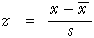

Translating data into z-scores
In the previous page, The 70-95-100 rule, you saw how any normal distribution can be standardised by subtracting the mean and dividing by the standard deviation. This standardised normal distribution is the same whatever the original normal distribution.
The same transformation is useful for data sets. The standardised values are called z-scores and are found with the formula:

For mark data, the z-scores explain how many standard deviations an individual mark is from the mean class mark.
The properties of z-scores are similar to those of a standard normal distribution.
- The z-scores have mean 0 and standard deviation 1.
- About 70% of the z-scores will be between -1 and +1.
- About 95% of the z-scores will be between -2 and +2.
- Almost all of the z-scores will be between -3 and +3.
The latter three properties are a rule-of-thumb that is often called the 70-95-100 rule.
The z-scores provide a good summary of how far above-average or below-average an individual value is. For example, a student whose mark corresponds to a z-score of 2.1 is well above-average — from the 70-95-100 rule, only about 2.5% of students would be expected to be above 2 (and 2.5% below -2) so a z-score of 2.1 must be one of the highest marks in a class.
The diagram below shows the marks obtained by 20 students in a maths test.
Click on individual crosses to see how the mark relates to the z-score for that student.
Use the pop-up menu to see how the same students performed in a reading test. The mean mark for the reading test is lower, so the z-scores do not correspond to the same raw marks as for the maths test. A z-score of 0 always corresponds to the mean raw mark in the class, and the best students are still getting a z-score of about 2.
Observe that Simeon obtained the lowest mark in all tests. All three of his z-scores are therefore around -1.5. Similarly, Samantha got the highest mark in all tests so all of her z-scores are between +1.5 and +2.5.
The table below shows all z-scores together.
| Student | Maths | Reading | Spelling |
|---|---|---|---|
| Simeon Suzanne Carolyn Marie Melanie Lorna Leith Julian Daniel Andrew Craig Aaron Benjamin Gar Katie Gavin Kamini Tracy Scott Samantha |
-1.51 -1.44 -1.19 -0.86 -0.80 -0.60 -0.80 -0.73 -0.28 0.37 -0.09 -0.22 0.11 0.69 1.01 1.08 1.53 0.82 1.27 1.66 |
-1.45 -0.74 -1.23 -1.12 0.06 -0.91 -0.26 -0.69 0.33 -0.53 -0.42 -0.15 -0.37 0.93 0.23 0.50 1.52 1.20 0.60 2.49 |
-1.54 -1.37 -1.04 -0.87 0.06 -0.36 -0.70 0.49 -0.44 -1.12 -0.02 -0.36 0.66 0.74 0.82 -0.61 1.67 1.25 0.99 1.76 |
The z-scores allow us to compare student performance better than the raw marks since they have corrected for the different levels of difficulty of the three tests.
Standardising marks in Excel
Marks can be easily standardised in Excel. The mean and standard deviation should be first evaluated in two cells of the worksheet. The top mark is evaluated with a formula that is then copied down the spreadsheet.